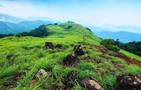
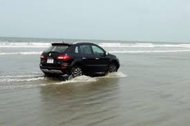

Kannur is most renowned for the Theyyam performances in its temples. This magnificent art form plays an integral part in the culture of this Northern Kerala district. Formerly known as Cannanore, Marco Polo christened it a ‘Great Emporium Of Spice Trade’. Kannur has, since time immemorial, been hailed as an influential sea port. Legend has it that it had interactions and trade relations with the rest of the world since the time of King Solomon to the Greeks, Arabs and Romans. It has a plethora of forts, temples, beaches and wildlife sanctuaries that regularly attract visitors. Major festivals and events are held throughout the year and this is among the best places in Kerala to spend your vacation in.
| Muzhappilangad Drive-in Beach | |
|---|---|
|  | Muzhappilangad Beach is famous for being Kerala's only drive-in beach. At about 7km from Thalassery in Kannur, you have a 4 km stretch of sand that awaits you to simply drive along as you soak in the view of the beautiful Malabar Coast. Along the way, one gets to munch on delicacies from a number of shacks that offer authentic Malabar cuisine. It is often considered a swimmers paradise as the black rocks protect the beach from deep currents. This is a perfect way to relax and soak in this clean and well maintained beach. One can also partake in adventure sports like paragliding, parasailing and micro light flights along with water sports, power boating or a simple catamaran ride. |
| Palakkayam Thattu | |
|---|---|
|
Palakkayam Thattu beckons you! Pack your bags and take the road to this bewitchingly beautiful, verdant hill station! Soaring at an altitude of 3500 ft above sea level, in the land of Theyyam and Thira, this place is carving a new face for Kannur with its novel tourism programmes. Tucked away deep in the majestic Western Ghats, Palakkayam Thattu is similar to Paithalmala hill station and is now attracting hordes of tourists from far and wide, with its pristine, natural exquisiteness. Sauntering through the lush foliage and over-hanging clouds in this serene hillock is one of the most exciting experiences you may ever have. The abundant flora and fauna in the region add to the attractiveness of the spot. |